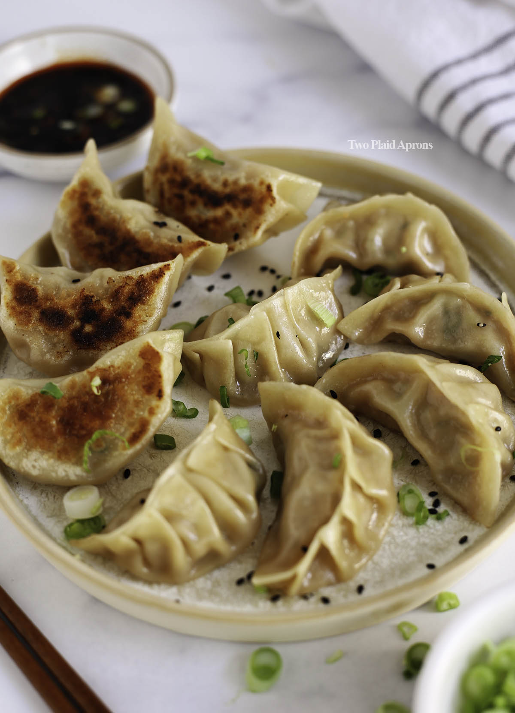

Once the oil is hot, place the dumplings in the pan, flat-side down, making sure they don't touch.
Fry for 1-2 minutes until the bottoms are lightly golden.
Pour in about \(\frac{1}{3}\) to \(\frac{1}{2}\) cup of water, and immediately cover with a tight-fitting lid.
Once the water is completely evaporated, remove the lid.